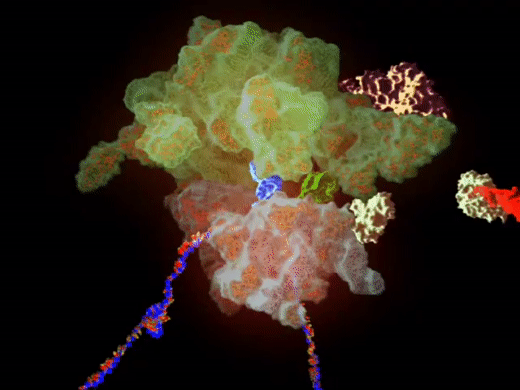
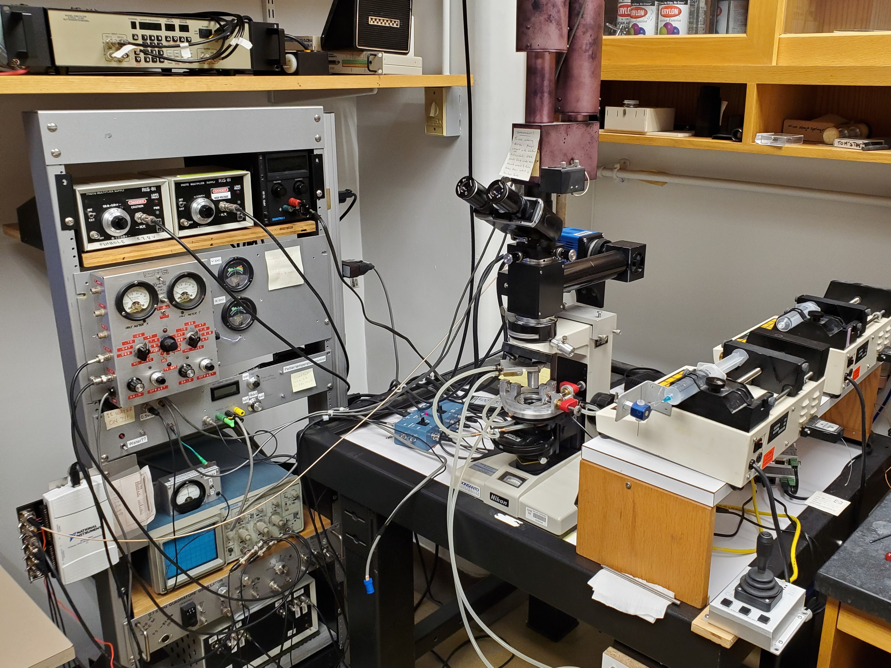
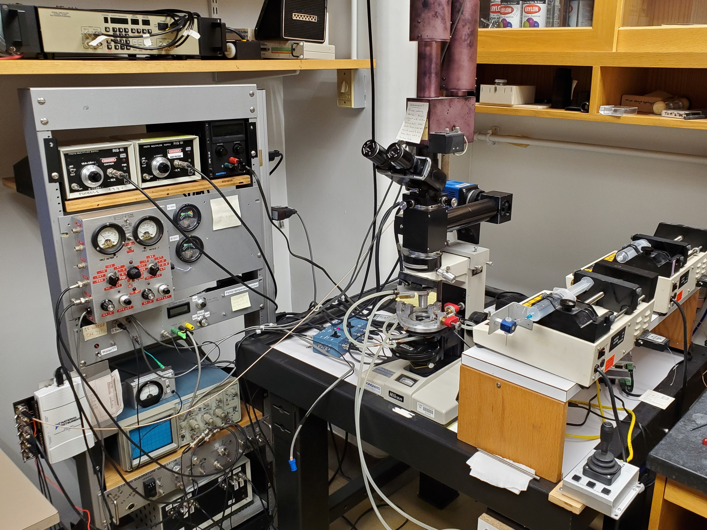
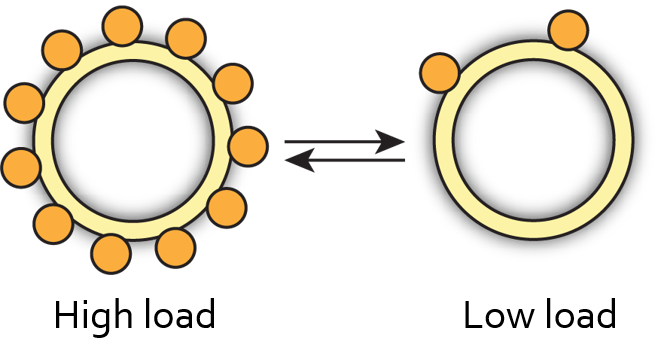

Artwork: Dan Nowakowski/Nicholas Taylor
Mechano-adaptation in a large protein complex
Soft, Living, Active and Adaptive Matter (SLAAM) Seminar
November 2021
Navish Wadhwa
Harvard University
 @NavishWadhwa
@NavishWadhwa
slides for this talk: navishwadhwa.com/talks
Machines perform specific tasks for us

Cells use molecular machines to perform specific tasks
 ATP synthase
ATP synthase
 Ribosome
 Replisome
Replisome
Do cells have smart machines too?
Yes, they do.
We use the bacterium E. coli as a model organism

Inhabits guts of mammals
Some strains are harmful, most harmless
Multiple flagella per cell
Bacteria are the smallest self-propelled swimmers

Many bacteria swim by rotating helical flagella
 Slowed down 20 times
Slowed down 20 times

A nanoscale motor powers
swimming in bacteria


Motor torque depends upon its rotation speed

Automatic gearshift in cars allows the engine to adapt to changing terrains


Automatic gearshift in E. coli allows the motor to adapt to changing loads


What is the physical and molecular mechanism underlying this automatic gearshift?
How can we change motor load?


Instantaneously
Reversibly
Controllably
Electrorotation allows
full control over motor load


Instantaneous
Reversible
Controllable
Electrorotation allows
full control over motor load
 

A change in load triggers stepwise changes in motor speed


The motor adapts to changes
in load by remodeling its stator

Remodeling kinetics depend on electrorotation speed

Higher electrorotation speed leads to lower torque
Hypothesis
Stator remodeling depends on torque
A quantitative model for stator assembly


We extracted the on rate ($k_+$) and the off rate ($k_-$) from the data
The off-rate decreases with torque


Free energy of the bound state decreases with torque


The off-rate decreases exponentially with torque

Molecular mechanism for torque-dependent unbinding rate

Low torque

High torque
Torque anisotropy allows us to test the model
Collapse of CCW and CW data validates the model


Conclusions and perspective


Cars and bacteria use different approaches
Cars adapt the transmission while bacteria adapt the engine itself
Flagellar motor is a bacterial mechanosensor


Acknowledgements

Howard Berg (Harvard)

Yuhai Tu (IBM)

Rob Phillips (Caltech)
Alberto Sassi (IBM)

NIH Pathway to Independence Award
 @NavishWadhwa
@NavishWadhwa